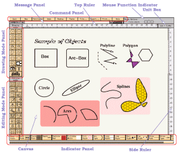

![[Window2]](../images/window2.gif)
![[3D House]](../images/3dhouse.gif)
![[reenpig.gif]](../images/greenpig.gif)
![[transit.gif]](../images/transit.gif)

[ English Version | Japanese Version ]
[ Contents
| Operating Manual
| New Features and Bugs Fixed
| Technical Informations
| Authors ]
この文書の Operating Manual の章では、 xfig の使用方法などについて解説します。 その他の情報、例えば xfig のインストールの方法などは、 Technical Information の章に記載してあります。

また、次に xfig とともに配布されているサンプルから抜き出した いくつかの例を示します。
Last update: 28 June 1998
written by us